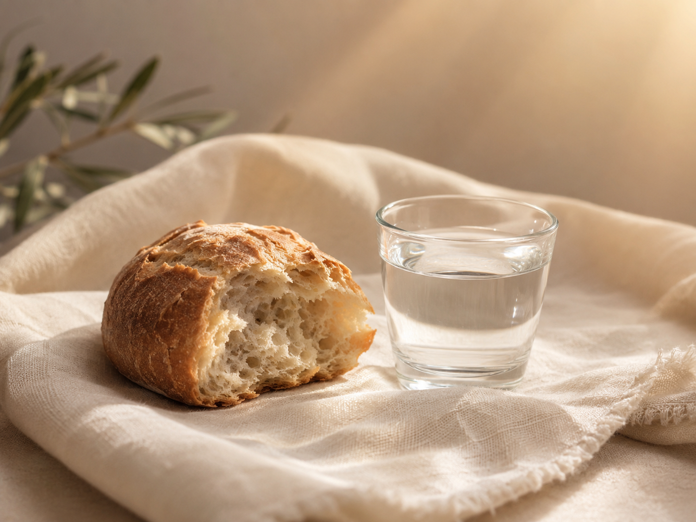

¿Tiene preguntas? Estamos aquí para ayudarle.
Nuestra reunión es un servicio de adoración familiar, reverente y centrado en Jesucristo.
Durante la reunión cantamos himnos, oramos, participamos de la Santa Cena y escuchamos mensajes sobre Jesucristo.
Si es su primera vez, no se espera que participe. Puede sentarse, escuchar y sentirse bienvenido.
Después del servicio de adoración tenemos clases para adultos, jóvenes y niños. Nos encantaría que se quedara y aprendiera con nosotros.

Durante nuestra reunión participamos de la Santa Cena en memoria de Jesucristo. El pan y el agua se reparten a la congregación.
Si es su primera vez, puede participar si lo desea, o simplemente observar con reverencia. Ambas formas son respetuosas.
| Preside | Presidente Luis E Campos |
| Dirige | Presidente Luis E Campos |
| Himno de Apertura | #1001 Fuente de mis bendiciones |
| Oración de Apertura | Por invitación |
| Himno Sacramental | #118 Asombro me da |
| Administración de la Santa Cena | |
| Discurso | Rey Martinez |
| Himno Intermedio | #56 Jehová mi Pastor es |
| Discurso | Rey Martinez |
| Himno de Cierre | #38 Santos, avanzad |
| Oración de Cierre | Por invitación |
La Santa Cena es una oportunidad sagrada para recordar a Jesucristo, renovar nuestros convenios y volver nuestro corazón a Él.